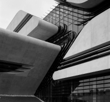

Intérieur du Pierrevives à Montpellier, France
Inauguré en 2012, cet édifice polyvalent incarne l'esthétique futuriste et l'innovation fonctionnelle. Les lignes
fluides et les formes dynamiques de la structure créent un espace unique dédié à la culture, aux archives et aux
événements publics.

Extérieur du Pierrevives à Montpellier, France
Pierrevives devient ainsi un point de convergence entre l'histoire et la modernité, où l'architecture devient un
catalyseur d'interaction sociale et culturelle.
Extérieur du Pierrevives à Montpellier, France
En explorant cet édifice novateur, les visiteurs découvrent l'ingéniosité de Zaha Hadid et son impact sur
l'enrichissement du patrimoine architectural de Montpellier.